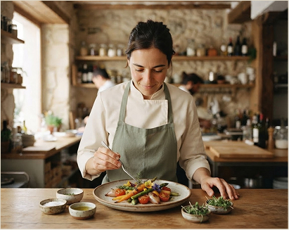

Head chef
Lucía Arranz
Trained in ingredient-led kitchens in Cantabria and Copenhagen, she shapes our seasonal menu and zero-waste philosophy.
In the kitchen, her focus is on making the most of every ingredient, from the first preparation to the final plate.
FocusSeasonal cooking · Zero waste